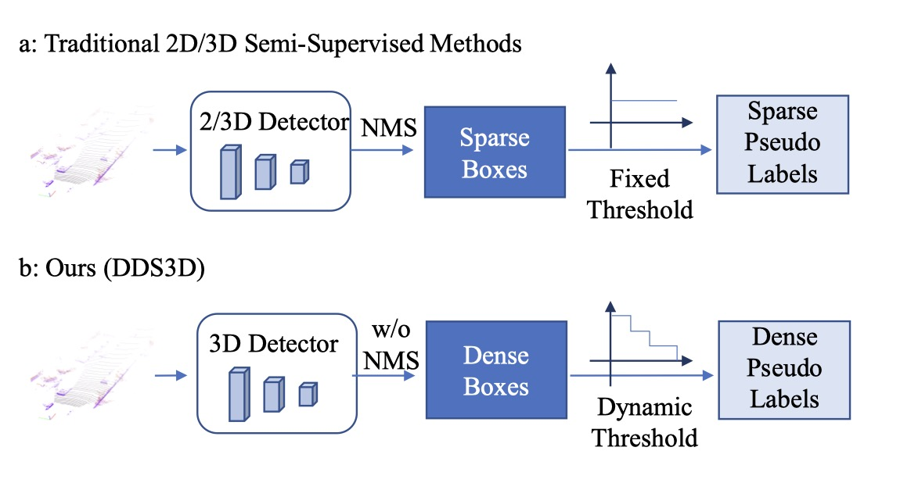

Dingkang Liang (梁定康)
PHD student
Github |
Google Scholar
Huazhong University of Science and Technology
Email: dkliang@hust.edu.cn
Brief Bio
I am currently a PHD student at Huazhong University of Science and Technology, under the supervision of Prof. Xiang Bai .
My research interests mainly lie in 3D object detection, crowd analysis.
News
04 / 2024: I obtain the Youth Student Fundamental Research Project from the National Natural Science Foundation of China ( 首批国家自然科学基金博士生项目), which is a grant of 300,000 RMB.
03 / 2024: FIDTM is selected as an ESI Highly Cited Paper (Top 1% of papers in the academic field)
03 / 2024: One paper is accepted by PR
02 / 2024: One paper is accepted by CVPR 2024
09 / 2023: Outstanding reviewer at ICCV 2023 09 / 2023: One paper is accepted by NeurIPS 2023
09 / 2023: TransCrowd is selected as an ESI Highly Cited Paper (Top 1% of papers in the academic field)
09 / 2023: One paper is accepted by IEEE TII
08 / 2023: One paper is accepted by IEEE RAL
08 / 2023: One paper is accepted by PRCV 2023
07 / 2023: One paper is accepted by ICCV 2023
04 / 2023: One paper is accepted by ICDAR 2023
03 / 2023: Two papers are accepted by CVPR 2023
02 / 2023: One paper is accepted by ICASSP 2023
01 / 2023: One paper is accepted by ICRA 2023
09 / 2022: Guided graduate students win 1st place in the VisDrone2022 (PRCV) challenge on the crowd counting track.
08 / 2022: One paper is accepted by IEEE TMM
06 / 2022: Two papers are accepted by ECCV 2022
03 / 2022: We released the first comprehensive public African text dataset [project]
10 / 2021: I'm awarded National Scholarship
10 / 2021: One paper is accepted by IJCV
09 / 2021: We win 1st place in the VisDrone2021 (ICCV) challenge on the crowd counting track.
03 / 2024: FIDTM is selected as an ESI Highly Cited Paper (Top 1% of papers in the academic field)
03 / 2024: One paper is accepted by PR
02 / 2024: One paper is accepted by CVPR 2024
09 / 2023: Outstanding reviewer at ICCV 2023 09 / 2023: One paper is accepted by NeurIPS 2023
09 / 2023: TransCrowd is selected as an ESI Highly Cited Paper (Top 1% of papers in the academic field)
09 / 2023: One paper is accepted by IEEE TII
08 / 2023: One paper is accepted by IEEE RAL
08 / 2023: One paper is accepted by PRCV 2023
07 / 2023: One paper is accepted by ICCV 2023
04 / 2023: One paper is accepted by ICDAR 2023
03 / 2023: Two papers are accepted by CVPR 2023
02 / 2023: One paper is accepted by ICASSP 2023
01 / 2023: One paper is accepted by ICRA 2023
09 / 2022: Guided graduate students win 1st place in the VisDrone2022 (PRCV) challenge on the crowd counting track.
08 / 2022: One paper is accepted by IEEE TMM
06 / 2022: Two papers are accepted by ECCV 2022
03 / 2022: We released the first comprehensive public African text dataset [project]
10 / 2021: I'm awarded National Scholarship
10 / 2021: One paper is accepted by IJCV
09 / 2021: We win 1st place in the VisDrone2021 (ICCV) challenge on the crowd counting track.
Publications (ALL )
(* Equal contribution, † Corresponding author)


(* Equal contribution, † Corresponding author)
LATFormer: Locality-Aware Point-View Fusion Transformer for 3D Shape Recognition
Xinwei He*, Silin Cheng*, Dingkang Liang*, Song Bai, Xi Wang, Yingying Zhu
Pattern Recognition, 2024.
| Paper
A Simple Vision Transformer for Weakly Semi-supervised 3D Object Detection
Dingyuan Zhang*, Dingkang Liang*, Zhikang Zou*, Jingyu Li, Xiaoqing Ye, Zhe Liu, Xiao Tan, Xiang Bai
ICCV, 2023.
| Paper

Academic Services (Reviewer)

• IEEE/CVF Conference on Computer Vision and Pattern Recognition (CVPR), 2021 - 2024
• IEEE/CVF International Conference on Computer Vision (ICCV), 2021 - 2023
• European Conference on Computer Vision (ECCV), 2022
• Neural Information Processing Systems (NeurIPS), 2023-2024
• International Conference on Learning Representations (ICLR), 2024
• International Conference on Machine Learning (ICML), 2024
• AAAI Conference on Artificial Intelligence (AAAI), 2024
• ACM International Conference on Multimedia (ACM MM), 2023 - 2024
• IEEE International Conference on Robotics and Automation (ICRA), 2024
• International Conference on 3D Vision (3DV), 2022
• IEEE Transactions on Pattern Analysis and Machine Intelligence (TPAMI)
• International Journal of Computer Vision (IJCV)
• IEEE Transactions on Image Processing (TIP)
• IEEE Transactions on Intelligent Transportation Systems (TITS)
• IEEE Transactions on Circuits and Systems for Video Technology (TCSVT)
• Science China-Information Science (SCIS)
Others• IEEE/CVF International Conference on Computer Vision (ICCV), 2021 - 2023
• European Conference on Computer Vision (ECCV), 2022
• Neural Information Processing Systems (NeurIPS), 2023-2024
• International Conference on Learning Representations (ICLR), 2024
• International Conference on Machine Learning (ICML), 2024
• AAAI Conference on Artificial Intelligence (AAAI), 2024
• ACM International Conference on Multimedia (ACM MM), 2023 - 2024
• IEEE International Conference on Robotics and Automation (ICRA), 2024
• International Conference on 3D Vision (3DV), 2022
• IEEE Transactions on Pattern Analysis and Machine Intelligence (TPAMI)
• International Journal of Computer Vision (IJCV)
• IEEE Transactions on Image Processing (TIP)
• IEEE Transactions on Intelligent Transportation Systems (TITS)
• IEEE Transactions on Circuits and Systems for Video Technology (TCSVT)
• Science China-Information Science (SCIS)
•Excellent volunteer teacher, Hainan, 2016.
•Former CEO & Co-Founder, [Wefly](https://www.tianyancha.com/company/3176757052), Inc. (The status of Wefly is cancellation.)
•Vice-chairman, Science and Technology Association of College of EOAST, Nanjing University of Posts and Telecommunication, May 2017 ~ May 2018.
•Outstanding Student Leader.
•Monitor, Electromagnetic fields and wireless technology, Nanjing University of Posts and Telecommunication, Sep 2015 ~ Jun 2019. (Our class won the award of the advanced class of Jiangsu Province.)
•Former CEO & Co-Founder, [Wefly](https://www.tianyancha.com/company/3176757052), Inc. (The status of Wefly is cancellation.)
•Vice-chairman, Science and Technology Association of College of EOAST, Nanjing University of Posts and Telecommunication, May 2017 ~ May 2018.
•Outstanding Student Leader.
•Monitor, Electromagnetic fields and wireless technology, Nanjing University of Posts and Telecommunication, Sep 2015 ~ Jun 2019. (Our class won the award of the advanced class of Jiangsu Province.)
Last updated: 2024-05-26